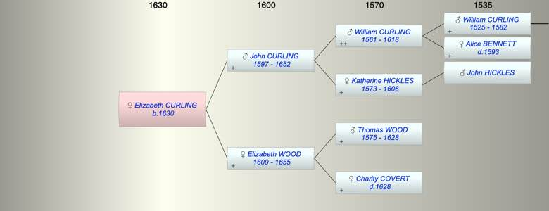

| [Index] |
| Elizabeth CURLING (1630 - ) |
|  |
| b. 1630 at St Laurence |
| Parents: |
| John (1) CURLING (1597 - 1652) |
| Elizabeth WOOD (1600 - 1655) |
| Siblings (5): |
| William (II) CURLING (1623 - 1660) |
| Anne CURLING (1625 - ) |
| John CURLING (1627 - ) |
| Jane CURLING (1628 - ) |
| Susanna CURLING (1629 - ) |
| Events in Elizabeth CURLING (1630 - )'s life | |||||
| Date | Age | Event | Place | Notes | Src |
| 1630 | Elizabeth CURLING was born | St Laurence | Note 1 | ||
| 1652 | 22 | Death of father John (1) CURLING (aged 55) | St Laurence | Note 2 | |
| 1655 | 25 | Death of mother Elizabeth WOOD (aged 55) | Note 3 | ||
| Note 1: bap St Laurence 5 Sep 1630 ex FMP also transcribed as 11 Sep dau of John |
| Note 2: burial 17 Dec 1652 at St Laurence John Curling senior |
| Note 3: buried 26 Mar 1655 wife of John confirmed PR |
| Created on a Mac™ using iFamily for Mac™ on 8 Oct 2023 |